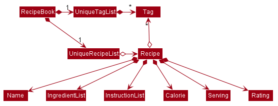

By: CS2103T-W12-4 Since: Feb 2020 Licence: MIT
1. Setting up
Refer to the guide here.
2. Design
2.1. Architecture

The Architecture Diagram given above explains the high-level design of the App. Given below is a quick overview of each component.
The .puml files used to create diagrams in this document can be found in the diagrams folder.
Refer to the Using PlantUML guide to learn how to create and edit diagrams.
|
-
At app launch: Initializes the components in the correct sequence, and connects them up with each other.
-
At shut down: Shuts down the components and invokes cleanup method where necessary.
Commons represents a collection of classes used by multiple other components.
The following class plays an important role at the architecture level:
-
LogsCenter: Used by many classes to write log messages to the App’s log file.
The rest of the App consists of four components.
Each of the four components
-
Defines its API in an
interfacewith the same name as the Component. -
Exposes its functionality using a
{Component Name}Managerclass.
For example, the Logic component (see the class diagram given below) defines it’s API in the Logic.java interface and exposes its functionality using the LogicManager.java class.
How the architecture components interact with each other
The Sequence Diagram below shows how the components interact with each other for the scenario where the user issues the command delete 1.
delete 1 commandThe sections below give more details of each component.
2.2. UI component
API : Ui.java
The UI consists of a MainWindow that is made up of parts e.g.CommandBox, ResultDisplay, PersonListPanel, StatusBarFooter etc. All these, including the MainWindow, inherit from the abstract UiPart class.
The UI component uses JavaFx UI framework. The layout of these UI parts are defined in matching .fxml files that are in the src/main/resources/view folder. For example, the layout of the MainWindow is specified in MainWindow.fxml
The UI component,
-
Executes user commands using the
Logiccomponent. -
Listens for changes to
Modeldata so that the UI can be updated with the modified data.
2.3. Logic component
API :
Logic.java
-
Logicuses theAddressBookParserclass to parse the user command. -
This results in a
Commandobject which is executed by theLogicManager. -
The command execution can affect the
Model(e.g. adding a recipe). -
The result of the command execution is encapsulated as a
CommandResultobject which is passed back to theUi. -
In addition, the
CommandResultobject can also instruct theUito perform certain actions, such as displaying help to the user.
Given below is the Sequence Diagram for interactions within the Logic component for the execute("delete 1") API call.
delete 1 Command
The lifeline for DeleteCommandParser should end at the destroy marker (X) but due to a limitation of PlantUML, the lifeline reaches the end of diagram.
|
2.4. Model component
API : Model.java
The Model,
-
stores a
UserPrefobject that represents the user’s preferences. -
stores the Address Book data.
-
exposes an unmodifiable
ObservableList<Person>that can be 'observed' e.g. the UI can be bound to this list so that the UI automatically updates when the data in the list change. -
does not depend on any of the other three components.
As a more OOP model, we can store a Tag list in Address Book, which Person can reference. This would allow Address Book to only require one Tag object per unique Tag, instead of each Person needing their own Tag object. An example of how such a model may look like is given below. |
2.5. Storage component
API : Storage.java
The Storage component,
-
can save
UserPrefobjects in json format and read it back. -
can save the Address Book data in json format and read it back.
2.6. Common classes
Classes used by multiple components are in the seedu.addressbook.commons package.
3. Implementation
This section describes some noteworthy details on how certain features are implemented.
3.1. [Proposed] Undo/Redo feature
3.1.1. Proposed Implementation
The undo/redo mechanism is facilitated by VersionedAddressBook.
It extends AddressBook with an undo/redo history, stored internally as an addressBookStateList and currentStatePointer.
Additionally, it implements the following operations:
-
VersionedAddressBook#commit()— Saves the current address book state in its history. -
VersionedAddressBook#undo()— Restores the previous address book state from its history. -
VersionedAddressBook#redo()— Restores a previously undone address book state from its history.
These operations are exposed in the Model interface as Model#commitAddressBook(), Model#undoAddressBook() and Model#redoAddressBook() respectively.
Given below is an example usage scenario and how the undo/redo mechanism behaves at each step.
Step 1. The user launches the application for the first time. The VersionedAddressBook will be initialized with the initial address book state, and the currentStatePointer pointing to that single address book state.

Step 2. The user executes delete 5 command to delete the 5th recipe in the address book. The delete command calls Model#commitAddressBook(), causing the modified state of the address book after the delete 5 command executes to be saved in the addressBookStateList, and the currentStatePointer is shifted to the newly inserted address book state.

Step 3. The user executes add n/David … to add a new recipe. The add command also calls Model#commitAddressBook(), causing another modified address book state to be saved into the addressBookStateList.

If a command fails its execution, it will not call Model#commitAddressBook(), so the address book state will not be saved into the addressBookStateList.
|
Step 4. The user now decides that adding the recipe was a mistake, and decides to undo that action by executing the undo command. The undo command will call Model#undoAddressBook(), which will shift the currentStatePointer once to the left, pointing it to the previous address book state, and restores the address book to that state.

If the currentStatePointer is at index 0, pointing to the initial address book state, then there are no previous address book states to restore. The undo command uses Model#canUndoAddressBook() to check if this is the case. If so, it will return an error to the user rather than attempting to perform the undo.
|
The following sequence diagram shows how the undo operation works:
The lifeline for UndoCommand should end at the destroy marker (X) but due to a limitation of PlantUML, the lifeline reaches the end of diagram.
|
The redo command does the opposite — it calls Model#redoAddressBook(), which shifts the currentStatePointer once to the right, pointing to the previously undone state, and restores the address book to that state.
If the currentStatePointer is at index addressBookStateList.size() - 1, pointing to the latest address book state, then there are no undone address book states to restore. The redo command uses Model#canRedoAddressBook() to check if this is the case. If so, it will return an error to the user rather than attempting to perform the redo.
|
Step 5. The user then decides to execute the command list. Commands that do not modify the address book, such as list, will usually not call Model#commitAddressBook(), Model#undoAddressBook() or Model#redoAddressBook(). Thus, the addressBookStateList remains unchanged.

Step 6. The user executes clear, which calls Model#commitAddressBook(). Since the currentStatePointer is not pointing at the end of the addressBookStateList, all address book states after the currentStatePointer will be purged. We designed it this way because it no longer makes sense to redo the add n/David … command. This is the behavior that most modern desktop applications follow.

The following activity diagram summarizes what happens when a user executes a new command:
3.1.2. Design Considerations
Aspect: How undo & redo executes
-
Alternative 1 (current choice): Saves the entire address book.
-
Pros: Easy to implement.
-
Cons: May have performance issues in terms of memory usage.
-
-
Alternative 2: Individual command knows how to undo/redo by itself.
-
Pros: Will use less memory (e.g. for
delete, just save the recipe being deleted). -
Cons: We must ensure that the implementation of each individual command are correct.
-
Aspect: Data structure to support the undo/redo commands
-
Alternative 1 (current choice): Use a list to store the history of address book states.
-
Pros: Easy for new Computer Science student undergraduates to understand, who are likely to be the new incoming developers of our project.
-
Cons: Logic is duplicated twice. For example, when a new command is executed, we must remember to update both
HistoryManagerandVersionedAddressBook.
-
-
Alternative 2: Use
HistoryManagerfor undo/redo-
Pros: We do not need to maintain a separate list, and just reuse what is already in the codebase.
-
Cons: Requires dealing with commands that have already been undone: We must remember to skip these commands. Violates Single Responsibility Principle and Separation of Concerns as
HistoryManagernow needs to do two different things.
-
3.2. [Proposed] Data Encryption
{Explain here how the data encryption feature will be implemented}
3.3. Logging
We are using java.util.logging package for logging. The LogsCenter class is used to manage the logging levels and logging destinations.
-
The logging level can be controlled using the
logLevelsetting in the configuration file (See Section 3.4, “Configuration”) -
The
Loggerfor a class can be obtained usingLogsCenter.getLogger(Class)which will log messages according to the specified logging level -
Currently log messages are output through:
Consoleand to a.logfile.
Logging Levels
-
SEVERE: Critical problem detected which may possibly cause the termination of the application -
WARNING: Can continue, but with caution -
INFO: Information showing the noteworthy actions by the App -
FINE: Details that is not usually noteworthy but may be useful in debugging e.g. print the actual list instead of just its size
3.4. Configuration
Certain properties of the application can be controlled (e.g user prefs file location, logging level) through the configuration file (default: config.json).
4. Documentation
Refer to the guide here.
5. Testing
Refer to the guide here.
6. Dev Ops
Refer to the guide here.
Appendix A: Product Scope
Target user profile:
-
cooks for oneself on a nearly daily basis, and hence:
-
needs to manage multiple recipes
-
needs to have a clean interface to view and read dishes _ experiments with dishes
-
-
is reasonably familiar with the command-line
-
requires a straightforward means to catalogue and codify dishes and meals without using spreadsheets
Value proposition:
-
Store, retrieve, manage and display recipes faster than navigating through websites and bookmarks, with command-line input, but GUI responses.
-
Present a unified interface for recipe management.
-
When managing recipes:
-
allow easier and faster retrieval with attributes like tags, time, difficulty, etc;
-
present a straightforward interface to edit, duplicate and combine recipes into meals
-
-
Export recipes to a printable, human-readable and consistent format
Appendix B: User Stories
| Rating | Priority | Difficulty |
|---|---|---|
1 |
Basic functionality—MUST HAVE |
Easy—Java basics + minor modifications to existing code |
2 |
Secondary functionality—VERY IMPORTANT |
Some effort needed—Moderate Java concepts ( |
3 |
Recommended functionality |
More effort needed—Obscure Java classes ( |
4 |
Nice to have |
Difficult—Time-consuming, >500+ LoC just for this feature |
5 |
Quality of life features, and all unfeasible options |
Nearly impossible—not only everything in (4), but algorithmically challenging too, and approaching 1K LOC |
| Priority | Difficulty | As a… | I can… | So that… |
|---|---|---|---|---|
1 |
1 |
Regular user |
add a recipe |
I can keep track of the recipe |
1 |
1 |
Regular user |
delete a recipe |
stop keeping track of the recipe |
1 |
1 |
Regular user |
list out all the recipies I have (names) |
easily see what recipies I have |
1 |
1 |
Regular user |
view the recipe |
use the recipe |
1 |
1 |
More experienced user |
duplicate a recipe |
modify a copy and keep the original |
1 |
1 |
User who is inexperienced with software |
use a helper command |
I can see all the commands and how to use them |
1 |
2 |
Regular user |
add instructions for the recipe |
I know how to cook the dish |
1 |
2 |
Regular user |
add ingredient to recipe |
I know how much ingredients to use |
1 |
2 |
Health-focused user |
track the amount of calories a dish has |
I know how healthy a dish is |
1 |
2 |
Regular user |
add time it takes to prepare / cook recipe |
I know how long it takes to cook the recipe |
1 |
2 |
Organized user |
tag recipes based on meal time (breakfast/lunch/dinner) |
I can easily refer to them |
1 |
2 |
User who likes experimenting |
modify a recipe |
the recipe will be updated |
2 |
1 |
User cooking for a group |
find out how much of each ingredient i need |
I can get the ingredients at one go |
2 |
1 |
Regular user |
add a serving size of a dish |
I know the serving size of the recipe |
2 |
2 |
Time-strapped user |
see the preparation and cooking time for each recipe |
plan my schedule around the time needed |
2 |
2 |
Health-focused user |
search for a dish based on how many calories i want to consume |
eat healthily |
2 |
2 |
User who is new to cooking |
tag recipes based on difficulty (beginner/intermediate/master) |
check if I am skilled enough to cook the dish |
2 |
2 |
User with many recipes |
tag and search for recipes based on their cuisine (western, chinese, indian etc) |
find them easily |
2 |
2 |
User who wants to be efficient |
favourite recipes/dishes |
I can easily refer back to them |
2 |
2 |
User who wants to get rid of ingredients |
search for dishes based on ingredients |
I can use up the ingredients that I want to get rid of |
2 |
2 |
Organized user |
tag and search dishes based on course (starter/main/dessert) |
I can easily search for them |
2 |
2 |
User with many recipes |
search for recipes based on a word in the dish name |
I can find it easily |
2 |
2 |
Organized user |
mark recipe as successfully done |
keep track of the recipes I have successfully attempted |
2 |
2 |
User cooking for a group/ occassion |
scale up/down the recipe |
I can prepare food for different group sizes |
2 |
2 |
User on a budget |
check the total price of the dish |
check if it is within my budget |
2 |
2 |
User with a limited budget |
find recipes within my budget |
I do not overspend |
2 |
2 |
User with allergies |
tag the dish as dangerous for allergies |
avoid cooking the dish |
2 |
3 |
User who not experienced |
highlight instructions in the recipe |
It is easier to follow the recipe |
2 |
3 |
Organized user |
sort my recipies based on criteria (tags) |
I can choose what order to view them |
2 |
4 |
Inexperienced user |
view an image of the final dish |
I know what dish I am cooking |
3 |
1 |
Regular user |
add ingredient prices |
I can tabulate the total cost of cooking dishes |
3 |
1 |
Health-focused user |
tag a dish e.g (Paleo/Keto/Vegan) |
I can check if the dish matches my dietary requirements |
3 |
1 |
Organized user |
have a counter of total recipies in the book |
I can know how many recipes I have |
3 |
1 |
User with a limited budget |
view the price of a specific ingredient |
I know how much a ingredient costs |
3 |
2 |
User with many friends |
import and combine my friend’s recipes from a file (.txt perhaps) |
I can have access to their recipies |
3 |
2 |
User who enjoys challenging themselves |
suggest dish to attempt based on my previous successful attempts |
I can become more skillful |
3 |
2 |
Regular user |
give a personal rating for the dish |
tag, search for and sort dishes based on my personal rating of the dish |
3 |
2 |
Regular user |
choose to only see the basic information for the recipe |
easily skim through the instructions and ingredients |
3 |
2 |
User who likes experimenting |
give me a random recipe that i have added |
I can challenge myself to cook what has been given |
3 |
3 |
Health-focused user |
add nutrition facts |
I can see how much sugar, salt, fat etc is in the dish prepared |
4 |
3 |
User who is more familiar with the metric system |
Convert between metric and imperial sizes. |
I can use the tools I have without needing to convert elsewhere |
4 |
3 |
User who usually prepares multiple dishes as sets |
group dishes into sets |
I can be more organised when cooking |
4 |
3 |
User who is inexperienced with software |
view the recipe in a GUI |
I have more visual feedback to work with |
4 |
4 |
User who is experienced with the software |
use shorthand commands |
I can navigate the software more efficiently |
5 |
4 |
User who wants to challenge myself |
have a timer/stopwatch |
time myself when I cook dishes and have a "best time" feature |
5 |
5 |
User who doesn’t like screens and prefers paper |
print recipes as pdf/paper |
I can refer to it more easily |
5 |
5 |
User who likes sharing my cooking |
post my recipes and dishes on social media |
share recipes and images for others to use |
5 |
5 |
User who appreciates efficiency |
add a recipe directly from online |
I can be efficient |
Appendix C: Use Cases
(For all use cases below, the System is CookBuddy and the Actor is the User, unless specified otherwise)
Use case: List recipes
MSS
-
Userrequests to list recipes -
CookBuddydisplays the list of recipesUse case ends.
Extensions
-
1a. The name cannot be found, or the index is invalid.
-
1a1.
CookBuddythrows an error message.Use case resumes at step 1.
-
-
2a. The list is empty.
-
2a1.
CookBuddydisplays a message stating the list is emptyUse case ends.
-
Use case: Delete recipe
MSS
-
Userrequests to delete a specific recipe by specifying its name or index -
CookBuddy deletes the recipe
Use case ends.
Extensions
-
1a. The name cannot be found, or the index is invalid.
-
1a1.
CookBuddythrows an error message.Use case ends.
-
Use case: Modify recipe
MSS
-
Userrequests to modify a recipe -
CookBuddyedits attributes of the recipe, and asks for user confirmation -
Userconfirms the editUse case ends.
Extensions
-
1a.
Userdoes not provide new attributes.-
CookBuddythrows an error message.Use case resumes at step 1.
-
-
2a.
Userdoes not confirm.-
2a1.
CookBuddydoes not save the editUse case ends.
-
Appendix D: Non Functional Requirements
-
Should work on any mainstream OS as long as it has Java
11or above installed. -
Should be able to hold up to 1000 recipes without noticeable sluggishness in performance for typical usage.
-
A user with above average typing speed for regular English text (i.e. not code, not system admin commands) should be able to accomplish most of the tasks faster using commands than using the mouse.
{More to be added}
Appendix E: Glossary
- Mainstream OS
-
Windows, macOS, Linux, UNIX
- Recipe
-
A list of ingredients followed by a list of instructions, detailing how to prepare a dish.
- Tag
-
A (possibly custom) text marker that users can use to organise their recipes; examples include
vegetarian,spicy,Indian. Tags can themselves be organised into groups, such ascuisines,diet,ingredients,mealtime, etc.
Appendix F: Product Survey
Product Name
Author: …
Pros:
-
…
-
…
Cons:
-
…
-
…
Appendix G: Instructions for Manual Testing
Given below are instructions to test the app manually.
| These instructions only provide a starting point for testers to work on; testers are expected to do more exploratory testing. |
G.1. Launch and Shutdown
-
Initial launch
-
Download the jar file and copy into an empty folder
-
Double-click the jar file
Expected: Shows the GUI with a set of sample contacts. The window size may not be optimum.
-
-
Saving window preferences
-
Resize the window to an optimum size. Move the window to a different location. Close the window.
-
Re-launch the app by double-clicking the jar file.
Expected: The most recent window size and location is retained.
-
{ more test cases … }
G.2. Deleting a recipe
-
Deleting a recipe while all recipes are listed
-
Prerequisites: List all recipes using the
listcommand. Multiple recipes in the list. -
Test case:
delete 1
Expected: First contact is deleted from the list. Details of the deleted contact shown in the status message. Timestamp in the status bar is updated. -
Test case:
delete 0
Expected: No recipe is deleted. Error details shown in the status message. Status bar remains the same. -
Other incorrect delete commands to try:
delete,delete x(where x is larger than the list size) {give more}
Expected: Similar to previous.
-
{ more test cases … }
G.3. Saving data
-
Dealing with missing/corrupted data files
-
{explain how to simulate a missing/corrupted file and the expected behavior}
-
{ more test cases … }